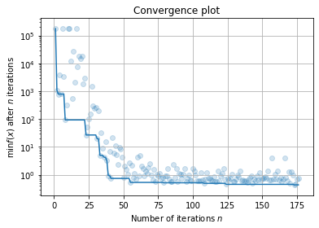
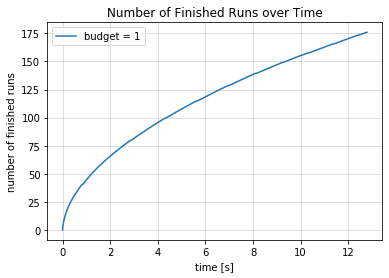
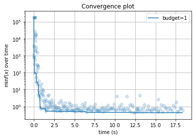

07. 检查点与热启动¶
检查点¶
为了防止优化过程异常中断（比如计算机异常断电，用户KeyBoardInterrupt等），我们开发了检查点与热启动机制。检查点机制保证每迭代checkpoint_freq次后将优化器以FMinResult的形式存储在硬盘上(文件路径为checkpoint_file)。
[1]:
from ultraopt import fmin, FMinResult
from ultraopt.tests.mock import config_space, evaluate
import sys
sys.tracebacklimit = 0 # limit traceback infomation
我们运行一个样例，并且在运行完之前使用KeyboardInterrupt将其中断：
[2]:
result = fmin(evaluate, config_space,
checkpoint_file="checkout.pkl", # 检查点保存的路径
checkpoint_freq=1, # 保存检查点的频率，默认为 10， 为了更及时地保存优化器状态，这里设置为 1
n_iterations=100000, # 设置一个很大的值，运行到一半 我们中断程序
)
0%| | 177/100000 [00:13<2:02:44, 13.55trial/s, best loss: 0.437]
ERROR:root:Internal Python error in the inspect module.
Below is the traceback from this internal error.
Traceback (most recent call last):
KeyboardInterrupt
During handling of the above exception, another exception occurred:
Traceback (most recent call last):
AttributeError: 'KeyboardInterrupt' object has no attribute '_render_traceback_'
During handling of the above exception, another exception occurred:
Traceback (most recent call last):
AssertionError
---------------------------------------------------------------------------
因为如果在保存checkpoint_file的时候中断的话会导致检查点文件不完整，UltraOpt的机制是会形成检查点备份文件：
[3]:
!ls -lh *.pkl *.bak
-rw-r--r-- 1 tqc tqc 699K 12月 29 12:15 checkout.pkl
-rw-r--r-- 1 tqc tqc 699K 12月 29 12:15 checkout.pkl.bak
[4]:
from joblib import load
如果加载保存不完整的检查点文件，会报错
[5]:
result = load("checkout.pkl")
ERROR:root:Internal Python error in the inspect module.
Below is the traceback from this internal error.
Traceback (most recent call last):
EOFError
During handling of the above exception, another exception occurred:
Traceback (most recent call last):
AttributeError: 'EOFError' object has no attribute '_render_traceback_'
During handling of the above exception, another exception occurred:
Traceback (most recent call last):
AssertionError
---------------------------------------------------------------------------
但我们可以加载检查点备份文件：
[8]:
checkout_content = load("checkout.pkl.bak")
检查点保存的内容本质上是优化器, UltraOpt的设计哲学是以优化器为中心，优化器承载了优化过程中的全部状态，所以我们只需要在检查点中保存优化器 :
[9]:
type(checkout_content)
[9]:
ultraopt.optimizer.bo.etpe_opt.ETPEOptimizer
我们可以用ultraopt.FMinResult这个数据结构包装优化器，这个数据结构也是ultraopt.fmin的返回值：
[20]:
result = FMinResult(checkout_content)
对于加载得到的FMinResult，我们可以像之前的教程一样对优化结果和优化过程进行数据分析：
[21]:
result
[21]:
+---------------------------------+
| HyperParameters | Optimal Value |
+-----------------+---------------+
| x0 | 0.3409 |
| x1 | 0.1209 |
+-----------------+---------------+
| Optimal Loss | 0.4366 |
+-----------------+---------------+
| Num Configs | 176 |
+-----------------+---------------+
随迭代数的拟合曲线
[22]:
result.plot_convergence(yscale="log");

随时间的拟合曲线
[23]:
result.plot_convergence_over_time(yscale="log");

随时间的运行数
[24]:
result.plot_finished_over_time();

热启动¶
在优化过程异常中断后，如果我们想重启优化过程，需要指定之前的运行结果：previous_result参数
[25]:
result = fmin(evaluate, config_space,
checkpoint_file="checkout.pkl",
checkpoint_freq=1,
previous_result="checkout.pkl.bak", # 之前的运行结果
n_iterations=20, # 只运行20次
)
100%|██████████| 20/20 [00:03<00:00, 6.20trial/s, best loss: 0.437]
我们看到虽然只运行了20次，但是之前的优化过程都是有记录的：
[30]:
result
[30]:
+---------------------------------+
| HyperParameters | Optimal Value |
+-----------------+---------------+
| x0 | 0.3409 |
| x1 | 0.1209 |
+-----------------+---------------+
| Optimal Loss | 0.4366 |
+-----------------+---------------+
| Num Configs | 215 |
+-----------------+---------------+
随时间的运行数曲线也可以正常绘制，各种图表反映了中断前和恢复后的状态：
[28]:
result.plot_finished_over_time();

[29]:
result.plot_convergence_over_time(yscale="log");
